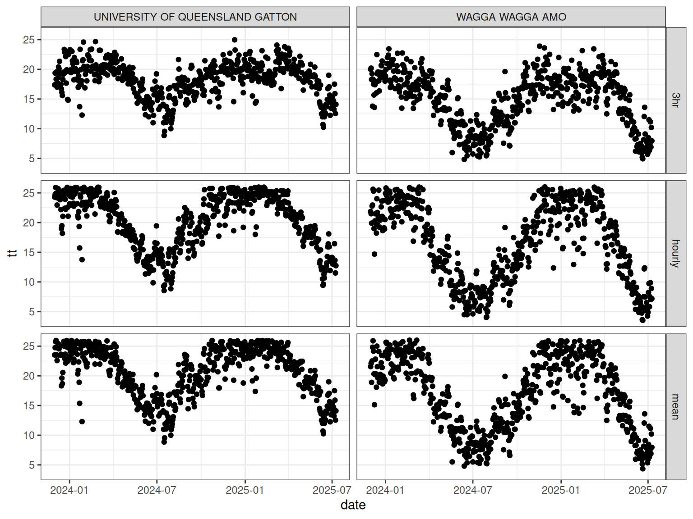
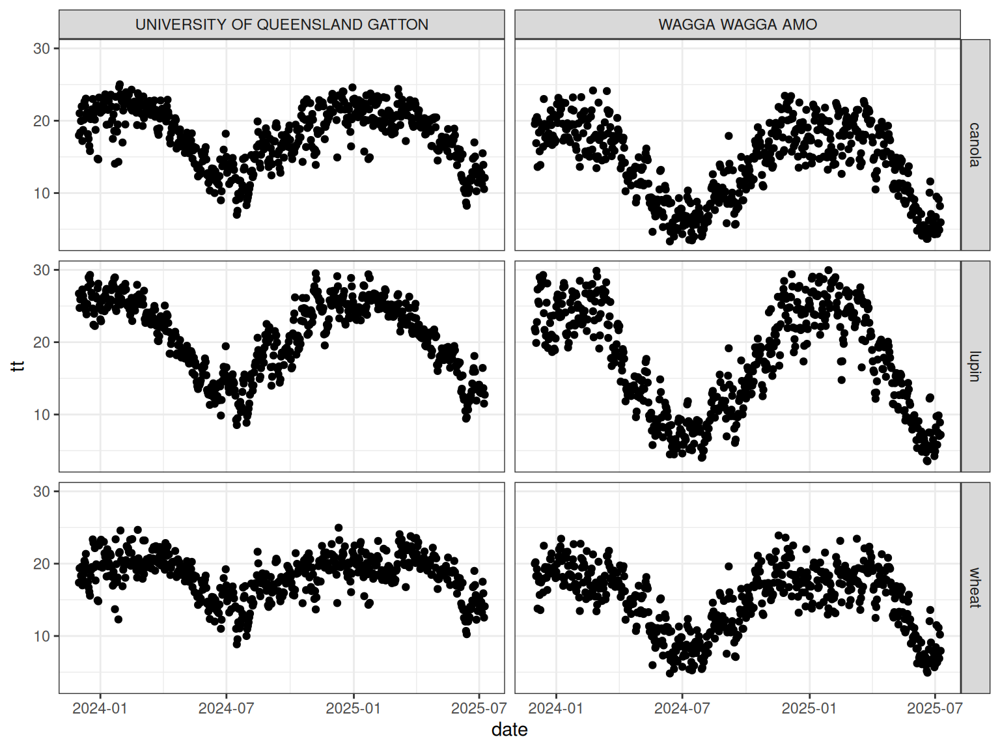

Introduction
Thermal time is one of the most commonly used concepts in crop modelling. It is widely used to describe crop development and phenology and forms the basis of many APSIM crop models.
The apsimwise ecosystem provides a consistent interface for calculating thermal time across multiple crops while maintaining crop-specific algorithms and default parameter values.
This vignette explains the design philosophy and demonstrates how the different apsimwise packages work together.
Design Philosophy
The apsimwise ecosystem separates calculation of thermal times into three layers:
- apsimwise as the user facing interface
- rapsimng.* as crop specific parameters
- tidyweather as the generic thermal time functions
flowchart LR
A[apsimwise<br/>User-facing interface]
B[rapsimng.*<br/>Crop specific parameters]
C[tidyweather<br/>Generic weather and thermal time functions]
A --> B
B --> C
The separation has three goals:
- Avoid duplicating generic calculations.
- Keep crop-specific knowledge close to each crop package.
- Provide a simple user-facing interface.
The weather data in APSIM format is read using read_weather() from the tidyweather package.
library(tidyweather)
met_files <- system.file(
c("extdata/ppd_72150.met", "extdata/ppd_40082.met"),
package = "tidyweather"
)
records <- bind_rows(
read_weather(met_files[1]),
read_weather(met_files[2])
)Layer 1: Generic Weather Functions
The tidyweather package contains weather-related calculations that are independent of crop type.
The daily thermal time is calculated using the thermal_time() function with specified temperature response parameters (e.g. three cardinal temperatures) using tidyverse syntax.
Three methods are available for calculating daily thermal time:
- Daily mean temperature
- Three-hourly estimates of air temperature
- Hourly estimates of air temperature by interpolating between daily maximum and minimum temperatures using a sinusoidal method during sunlight hours and an exponential decline during nighttime hours
Daily mean temperature is the simplest method and is suitable for most applications.
tt_mean <- records |>
mutate(
tt = tidyweather::thermal_time(
mint = mint,
maxt = maxt,
x_temp = c(0, 26, 37),
y_temp = c(0, 26, 0)
)
) |>
mutate(method = "mean")Method 3hr uses three-hourly estimates of air temperature to calculate thermal time.
tt_3hour <- records |>
mutate(
tt = tidyweather::thermal_time(
mint = mint,
maxt = maxt,
x_temp = c(0, 26, 37),
y_temp = c(0, 26, 0),
method = "3hr"
)
) |>
mutate(method = "3hr")Method HourlySinPpAdjusted uses hourly estimates of air temperature to calculate thermal time which requires the date and latitude. Argument latitude requires a single value for each weather record. In case of multiple weather records, group_by(name) can be used to ensure that the first latitude value is used for each weather record.
tt_all <- bind_rows(tt_mean, tt_3hour, tt_hourly)
tt_all |>
ggplot() +
geom_point(aes(x = date, y = tt)) +
theme_bw() +
facet_grid(method~name)
The tidyweather package does not contain crop-specific parameters.
Layer 2: Crop-Specific Packages
Crop-specific packages provide thermal time related parameter values for individual crops which match the crop configuration in APSIM NG including:
rapsimng.wheatrapsimng.canolarapsimng.chickpearapsimng.lentilrapsimng.lupinrapsimng.fababean
The crop parameters can be accessed using the crop() function directly from the crop package.
The crop-specific thermal times are calculated using the thermal_time() function in each package.
The following examples demonstrate how to calculate thermal time for wheat, lupin, and canola using the crop-specific packages.
Wheat uses the three hourly method to calculate thermal time.
tt_wheat <- records |>
mutate(
tt = rapsimng.wheat::thermal_time(
mint = mint,
maxt = maxt
)
) |>
mutate(crop = "wheat")Lupin uses the hourly method to calculate thermal time which requires the date and latitude. Argument latitude requires a single value for each weather record. In case of multiple weather records, group_by(name) can be used to ensure that the first latitude value is used for each weather record.
tt_lupin <- records |>
group_by(name) |>
mutate(
tt = rapsimng.lupin::thermal_time(
mint = mint,
maxt = maxt,
date = date,
latitude = latitude[1]
)
) |>
mutate(crop = "lupin")Canola also uses the three hourly method but different cardinal temperatures to calculate thermal time.
tt_canola <- records |>
mutate(
tt = rapsimng.canola::thermal_time(
mint = mint,
maxt = maxt
)
) |>
mutate(crop = "canola")
tt_crop <- bind_rows(tt_wheat, tt_lupin, tt_canola)
tt_crop |>
ggplot() +
geom_point(aes(x = date, y = tt)) +
theme_bw() +
facet_grid(crop~name)
Layer 3: apsimwise
The apsimwise package provides a unified interface for users. Instead of remembering which package contains a function, users can work through a common API.
The thermal times are calculated using the thermal_time() function in the apsimwise package for wheat, lupin, and canola.
tt_wheat <- records |>
mutate(
tt = apsimwise::thermal_time(
mint = mint,
maxt = maxt,
crop = "wheat"
)
) |>
mutate(crop = "wheat")
tt_lupin <- records |>
group_by(name) |>
mutate(
tt = apsimwise::thermal_time(
mint = mint,
maxt = maxt,
date = date,
latitude = latitude[1],
crop = "lupin"
)
) |>
mutate(crop = "lupin")
tt_canola <- records |>
mutate(
tt = apsimwise::thermal_time(
mint = mint,
maxt = maxt,
crop = "canola"
)
) |>
mutate(crop = "canola")
tt_all <- bind_rows(tt_wheat, tt_lupin, tt_canola)
tt_all |>
ggplot() +
geom_point(aes(x = date, y = tt)) +
theme_bw() +
facet_grid(crop~name)
apsimwise automatically dispatches the calculation to the appropriate crop package while preserving crop-specific defaults.
Overriding Parameters in the apsimwise Layer
There are two ways to override the default crop parameters in the apsimwise layer.
- Parameters can also be supplied directly to the function call.
- The crop parameters can be modified using the
crop()function.
Overriding Parameters in the Function Call
records |>
group_by(name) |>
mutate(
tt = apsimwise::thermal_time(
mint = mint,
maxt = maxt,
date = date,
latitude = latitude[1],
crop = "lupin",
x_temp = c(0, 25, 35),
y_temp = c(0, 25, 0)
)
)This allows temporary experimentation without modifying global crop settings.
Overriding Parameters in the crop() function
crop() can be used to modify the default crop parameters in the apsimwise package. This allows users to customise parameters for all following calculations.